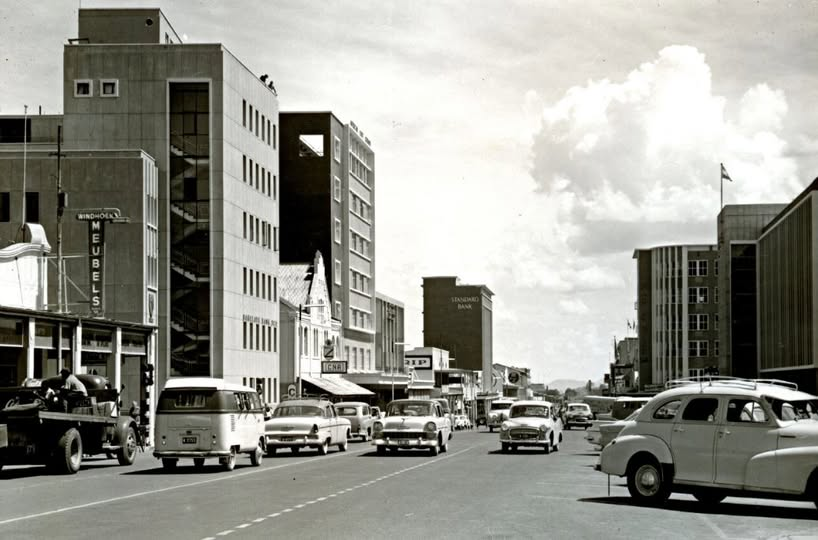

About Windhoek
Welcome to Windhoek, a city with a rich and diverse history.

History and Culture
Windhoek's history is a fascinating tale of indigenous roots, colonial influence, and modern growth. The city's culture is a vibrant mix of traditions, languages, and artistic expressions.
From the German colonial architecture to the bustling markets, Windhoek reflects Namibia's diverse heritage.
The city's historical sites, such as the Christuskirche and the Independence Memorial Museum, are testaments to its past. These sites provide insights into the city’s cultural makeup and history.